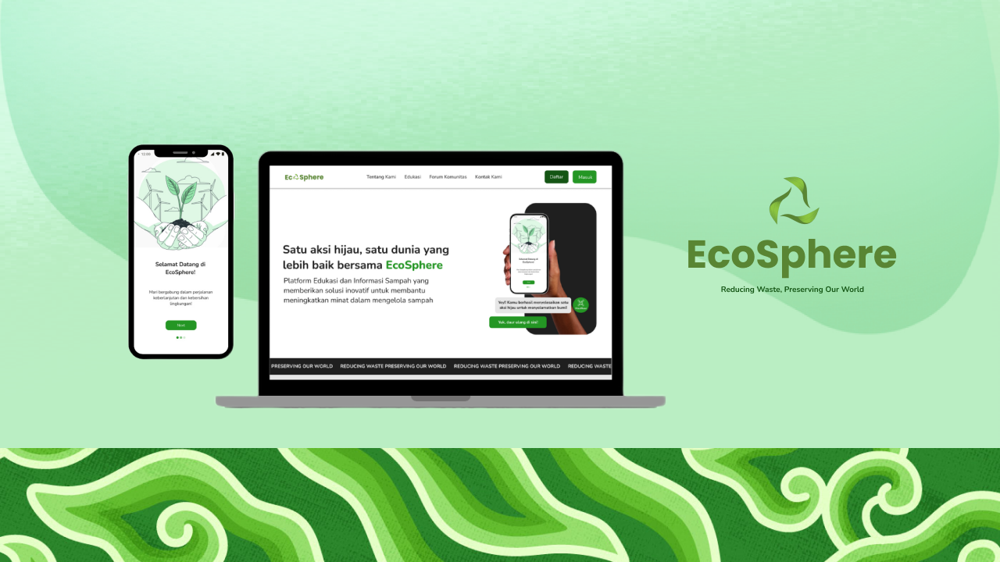

EcoSphere
Best 3 Massive Project Study Independent (MSIB) Batch 6 yang merupakan project kolaborasi antara program Mobile Android Development, Website Development, dan Advance Artificial Intelligent. Ecosphere adalah sebuah aplikasi berbasis mobile dan website untuk pengelolaan sampah yang dibarengi dengan AI untuk mengetahui jenis-jenis sampah dan cara pengelolaannya.